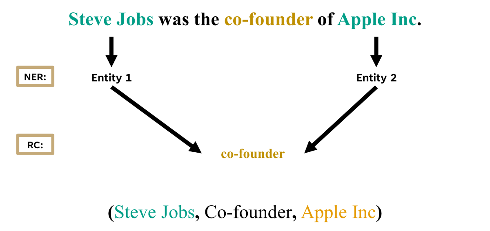
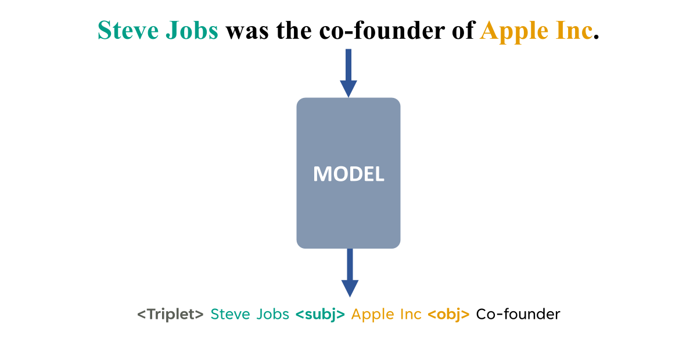
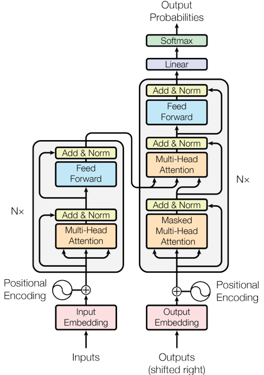

Recent Paradigms in Relation Extractions
first paradigm
In this paradigm, relations were extracted using a two-phase approach:
1) Named Entity Recognition (NER)2) Relation Classification (RC)
A few years ago, extracting relations from sentences required a two-step process. First, a separate model was employed to recognize entities in the text. Then, a second model was used to classify the type of relation most likely present, based on the sentence and the entities identified in the previous step.

However, this approach has two significant drawbacks:
-
Lack of Parameter Sharing: Parameters are not shared between the NER and RC models, leading to inefficiencies.
-
Complex Workflow: Additional steps such as negative sampling and costly annotation procedures are required, further complicating the process.
Second paradigm
For the first time, in 2021, a paper titled
REBEL introduced a new approach where relation extraction was treated as a sequence-to-sequence task. In this paradigm, most models were based on Recurrent Neural Networks (RNNs), such as LSTM. In essence, the model takes a sentence as input and generates another sentence as output, revealing the relations present within the original sentence.

Although it was a novel approach, RNNs have inherent drawbacks:
-
Hallucination: RNNs can generate outputs not grounded in the input, leading to errors.
-
Sequential Processing: RNNs process data one step at a time, limiting parallelization and slowing down training.
-
Vanishing/Exploding Gradients: Limits RNNs' ability to learn long-term dependencies.
-
Difficulty with Long-Term Dependencies: RNNs struggle to capture distant relationships in sequences.
Latest Paradigm
With the rise of Transformers, relation extraction models have shifted from traditional approaches to leveraging Large Language Models (LLMs). These models have demonstrated significant improvements, particularly through Retrieval-Augmented Generation (RAG) systems, which help mitigate issues like hallucinations. The parallel processing capabilities of Transformers also result in much faster data handling.
In the second paradigm, fine-tuning was necessary to adapt the model to the desired output format. LLMs address this challenge through few-shot or single-shot learning and advanced prompt engineering, reducing the need for extensive fine-tuning.
